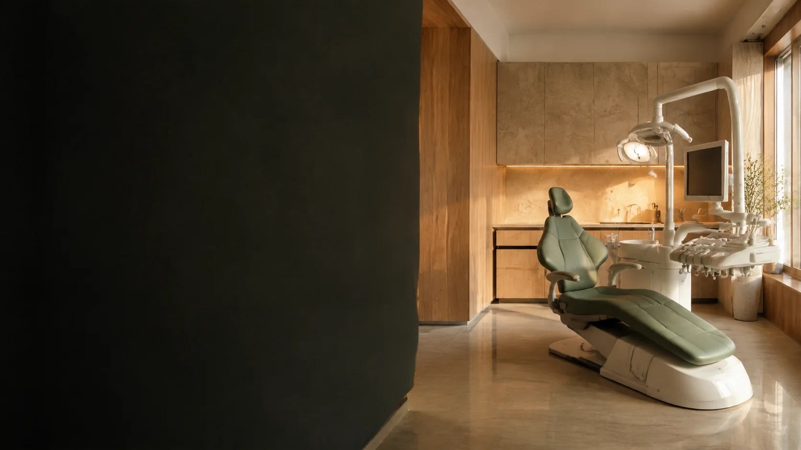
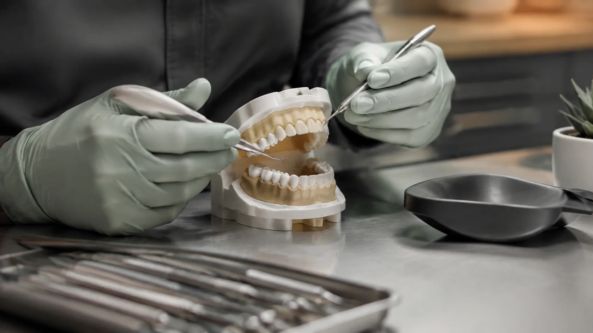
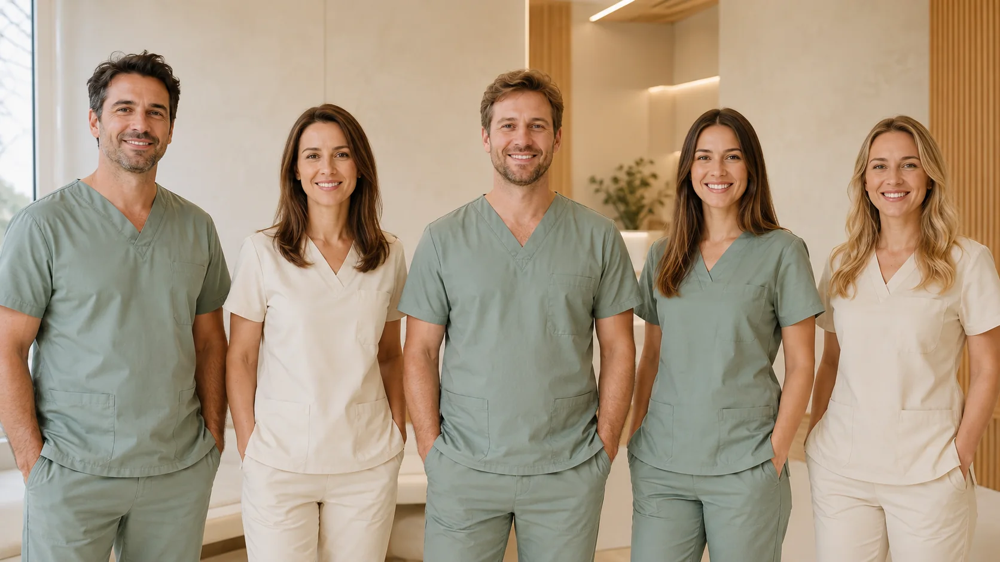

Începutul poveștii
Un spațiu mic și o idee mare: mai multă grijă pentru fiecare persoană.
Despre noi
Un spațiu în care tehnologia se întâlnește cu grija. Iar fiecare vizită începe cu tine.

UN SPAȚIU PENTRU STAREA TA DE BINEPOVESTEA NOASTRĂ
LUMEN este un concept de clinică construit în jurul unei idei simple: îngrijirea bună începe cu o relație bună.
Ne imaginăm un loc luminos și calm, în care primești explicații clare și ai timp să iei decizii. O echipă care privește dincolo de tratament, spre omul din fața sa.
Povestea, cronologia și cifrele de mai jos sunt fictive, create pentru acest site demonstrativ.
ani experiență
membri în echipă
pacienți
arii de tratament
FILOSOFIA NOASTRĂ
Trei idei care dau sens fiecărei etape.
Ascultăm înainte să propunem. Întrebările tale fac parte din consultație.
Discutăm opțiunile, costurile și pașii următori, cu răbdare.
Prevenția și urmărirea sunt parte din aceeași relație de încredere.
O POVESTE IMAGINATĂ
Un spațiu mic și o idee mare: mai multă grijă pentru fiecare persoană.
Un concept de echipă în care specialitățile lucrează împreună.
Tehnologie care sprijină diagnosticul și planificarea.
TEHNOLOGIE CU SENS
Mai multă claritate pentru medic. Un plan mai ușor de înțeles pentru tine.
Diagnostic rapid, direct în clinică. Investigații recomandate atunci când sunt necesare.

Precizie sporită pentru tratamente complexe.
Tratamentul începe înainte de prima intervenție.
O experiență calmă, cu timp pentru întrebările tale.
ÎN SPATELE FIECĂRUI ZÂMBET
Cinci personalități. Aceeași grijă pentru tine. Profile fictive, create pentru acest concept.
 MEDIC · PROFIL DEMO
MEDIC · PROFIL DEMOImplantologie & chirurgie orală
Planificare digitală · Reabilitare orală
 MEDIC · PROFIL DEMO
MEDIC · PROFIL DEMOEstetică dentară & protetică
Estetică naturală · Restaurări dentare
 MEDIC · PROFIL DEMO
MEDIC · PROFIL DEMOOrtodonție
Echilibru funcțional · Aliniere dentară
 ASISTENT · PROFIL DEMO
ASISTENT · PROFIL DEMOAsistent medical
Grijă · Organizare · Confort
 ASISTENT · PROFIL DEMO
ASISTENT · PROFIL DEMOAsistent medical
Sprijin · Comunicare · Atenție
SPAȚIUL LUMEN

UN ÎNCEPUT BUN
Spune-ne cu ce te putem ajuta, iar noi te contactăm pentru confirmarea programării.